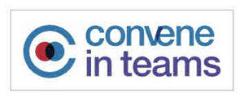

Trade Mark Journal No.2025/030 25 July 2025
UK00004234861 16 July 2025 (9,35,38,41,42)

- Class 9
- Computer software which enables users to upload electronic board and/or other meeting and business materials or personal information for secure access to such materials over the internet by other users such as board of directors, executives and any individuals; Computer software which allows users to participate in web-based meetings and classes, with access to data, documents, images and software applications through a web browser or any electronic devices; the aforesaid goods being capable of integrating with an application platform for a workspace for real-time collaboration and communication, file and application sharing; none of the aforesaid which are or relate to credit cards, debit cards, charge cards, stored value, prepaid card services, electronic funding, currency transfer services, electronic payments services, travel insurance services or cheque verification services or ATMs.
- Class 35
- Providing business records and/or personal information management services by means of a web-based solution which enables users to upload electronic board and/or other meeting and business materials for secure access to such materials over the internet by other users such as board of directors, executives and any individuals; none of the aforesaid which are or relate to credit cards, debit cards, charge cards, stored value, prepaid card services, electronic funding, currency transfer services, electronic payments services, travel insurance services or cheque verification services or ATMs.
- Class 38
- Telecommunication services, namely, providing web-based multimedia teleconferencing, videoconferencing, and online meeting services that allow simultaneous and asynchronous viewing, sharing, editing, and discussion of documents, data, and images by participants via a web browser or any electronic devices; Providing customers with online access to online reports regarding status of web-based teleconferences, videoconferences, and meetings; the aforesaid services being capable of integrating with an application platform for a workspace for real-time collaboration and communication, file and application sharing; none of the aforesaid which are or relate to credit cards, debit cards, charge cards, stored value, prepaid card services, electronic funding, currency transfer services, electronic payments services, travel insurance services or cheque verification services or ATMs.
- Class 41
- Educational services, namely, providing online and in-person training in the fields of online meetings, online events, multimedia presentations, and remote computer access, and distribution (other than transportation) of training materials in connection therewith; none of the aforesaid which are or relate to credit cards, debit cards, charge cards, stored value, prepaid card services, electronic funding, currency transfer services, electronic payments services, travel insurance services or cheque verification services or ATMs.
- Class 42
- Computer programming services, software design, development and modification of computer software applications which enable electronic upload of board and/or other meeting and business materials for secure access to such materials over the internet by other users such as board of directors, executives and any individuals; Scientific and technological services and research and design for the aforesaid computer software applications; installation, maintenance and repair of computer software, and computer or professional consultancy services to support or facilitate the use of the aforesaid computer software applications by end users; the aforesaid services being capable of integrating with an application platform for a workspace for real-time collaboration and communication, file and application sharing; none of the aforesaid which are or relate to credit cards, debit cards, charge cards, stored value, prepaid card services, electronic funding, currency transfer services, electronic payments services, travel insurance services or cheque verification services or ATMs.
Azeus Systems Holdings Limited
Representative: Marks & Clerk LLP